Primer dibujo
Presenta una pequeña inscripción blanca sobre fondo de color, con sol y arbusto. El primer dibujo se empleó para imprimir los siguientes valores de la emisión Hradčany: 3h, 5h, 10h, 20h, 25h, 30h, 40h.
3h – violeta
| Color | POFIS | MERKUR | N.º de planchas |
|---|---|---|---|
| violeta | 2 | 2 | 2 |
| violeta purpúreo | - | 2a | 2 |
Tirada: Sin dentar 29 760 000 · Dentado oficial: – · Fecha de emisión: 21. 12. 1918 · Esquemas de las planchas de impresión
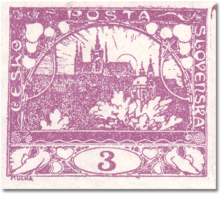
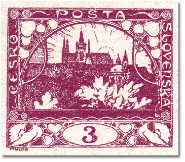
5h – verde claro
| Color | POFIS | MERKUR | N.º de planchas |
|---|---|---|---|
| verde claro | 3 | 3 | 4 |
| verde / verde intenso | 3a | 3a | 4 |
| verde amarillento | - | 3b | 4 |
Tirada: 113 930 000 (sin dentar 105 640 000, con dentado oficial 8 290 000) · Dentado: 11½ de línea, 11½ : 10¾ de línea · Fecha de emisión: 18. 12. 1918 · Esquemas de las planchas
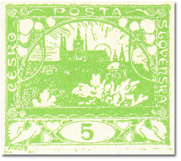
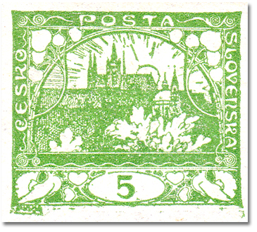
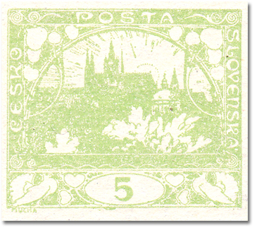
10h – rojo
| Color | POFIS | MERKUR | N.º de planchas |
|---|---|---|---|
| rojo | 5 | 5 | 4 |
| rojo oscuro | 5a | 5a | 4 |
Tirada: 110 310 000 (sin dentar 108 750 000, con dentado oficial 1 560 000) · Dentado: 11½ de línea · Fecha de emisión: 18. 12. 1918 · Evolución de la posición 91 (retoque) · Esquemas de las planchas
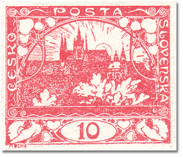
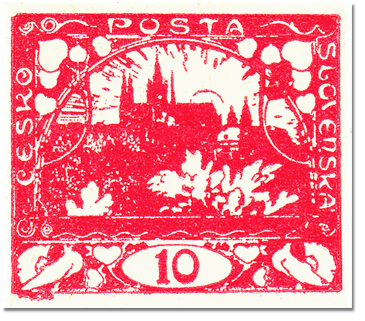
20h – verde azulado
| Color | POFIS | MERKUR | N.º de planchas |
|---|---|---|---|
| verde azulado | 8 | 8 | 4 |
Tirada: 108 903 000 (sin dentar 103 123 000, con dentado oficial 5 750 000) · Dentado: 13¾ : 13½ de peine, 13¾ de línea, 11½ de línea · Fecha de emisión: 30. 12. 1918 · Esquemas de las planchas
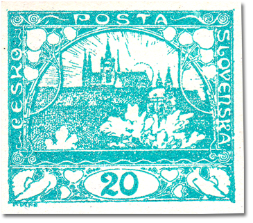
25h – azul
| Color | POFIS | MERKUR | N.º de planchas |
|---|---|---|---|
| azul | 10 | 10 | 2 |
| azul claro | 10a | 10a | 2 |
| azul oscuro | 10b | 10b | 2 |
| ultramar | 10c (nevydaná) | 10c (nevydaná) | 2 |
Tirada: 110 310 000 · Dentado: 13¾ : 13½ de peine, 11½ de línea · Fecha de emisión: 18. 12. 1918 · Esquemas de las planchas
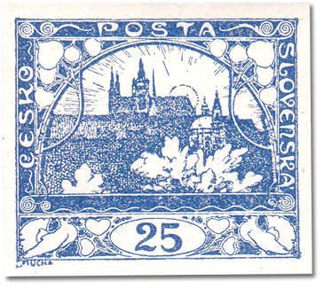
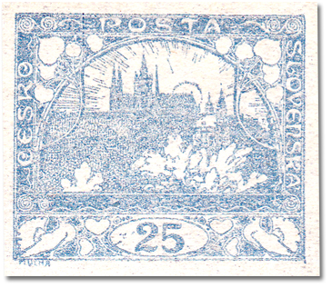
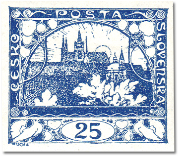
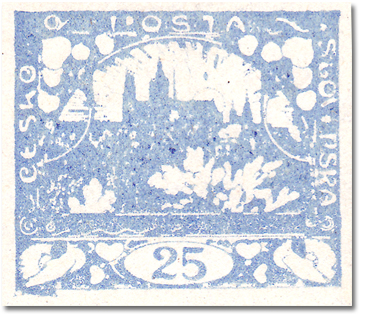
30h – amarillo
| Color | POFIS | MERKUR | N.º de planchas |
|---|---|---|---|
| amarillo / amarillo oliváceo | 12 | 12 | 2 |
| amarillo oliváceo oscuro | - | 12a | 2 |
Tirada: Sin dentar 20 750 000 · Dentado: – · Fecha de emisión: 17. 1. 1919 · Esquemas de las planchas
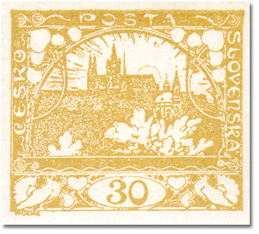
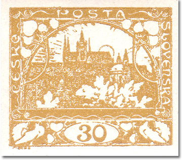
40h – naranja
| Color | POFIS | MERKUR | N.º de planchas |
|---|---|---|---|
| naranja | 14 | 14 | 2 |
Tirada: Sin dentar 16 950 000 · Dentado: – · Fecha de emisión: 23. 1. 1919 · Esquemas de las planchas
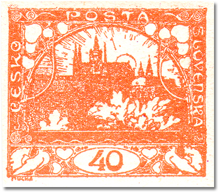